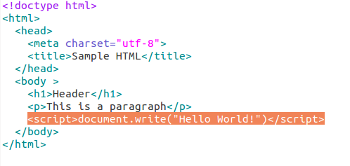
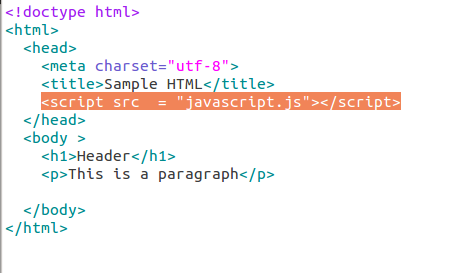
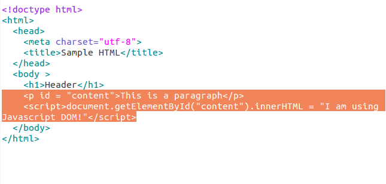

GOOGLE 2 TUTORIAL
What is Javascript?
Javascript Concepts
Javascript is understood by most browsers. It is a scripting language that we can use to accomplish tasks on the client side. The following are some concepts about Javascript
Today we are going to learn to some basics about Javascript. First, let's start writing a "Hello World" program using Javascript and understand where to put Javascript code (inline or external).
"Hello World" with Javascript (Inline)
Let's start our first "Hello World" program use inlining.
Let's have a plain HTML page ready. Also open the file in a browser.
Javascript could be embedded into the HTML page(Inline). Save the file.
Refresh the HTML page on browser. Did you see that "Hello World" is now shown in the HTML page?
Congratulations, you've just finished a "Hello World" program
"Hello World" with Javascript (Link External File)
Let's start our second "Hello World" program using external Javascript file.
Let's have a plain HTML page ready just like before. Also open the file in a browser.
Javascript can be put in an external file and We can link to the Javascript file by doing the following.
Create a separate javascript file in the same directory, call it "javascript.js" as you see in the above picture. Within the javascript.js, put the following code:
window.alert("Hello World! ");
This will create a pop up window every time the page is loaded.
Let's see the result! (refresh the HTML page) If you see a pop up window with "Hello World", then you've accomplished this task.
Changing HTML Content
Next, we will introduce the DOM(Document Object Model). The DOM is an javascript interface that allows us to access the HTML content.
Let's say we have the given plain HTML page like before. We would like to change the "This is a paragraph" to "I am using Javascript DOM!".
First, open the original HTML page in a browser. We want to compare how the content of HTML page is changed before and after Javascript code. The "This is a paragraph" is part of the paragraph tag. We would like to access the paragraph tag and change its content through Javascript DOM. First, we could assign an id to the paragraph tag. Then, we could access the the paragraph through the id. Like the following:
Then refresh the HTML page. Did you see that the content of the first paragraph tag just changed?
Congrats, you just learned how to use the DOM to access HTML content.
Arrays
Array Declaration:
In Javascript, there are two main ways to declare arrays.
The Array Constructor:
var example = new Array();
var example = ("one,"two","three","four","five")
Array Literal Notation:
var example = ["one","two","three","four"];
Length: //using last array declared called example example.length; //equal to 4 example.length == 4; //true
Arrays can are dynamically sized in Javascript meaning they can shrink and grow after they are declared and defined.
//adds 5 to end of the array; note: arrays can have elements of different types
example[length] = 5;
example.length; //now length is 5
//can grow arrays by adding new elements to an index that might be greater than length
example[9] = "the"; //example = ["one","two","three","four", 5, , , "the"];
// can modify elements too
example[0] = 15; //example = [15,"two","three","four", 5, , , "the"];
//can delete elements
delete example[1]; //changes example[1] from "two" to undefined
Can use built-in methods to add:
//unlike Java can add multiple elements at a time
var arrayarray = [1,2,3,4,5,6];
arrayarray.push(7,8); //arrayarray = [1,2,3,4,5,6,7,8];
//can add elements to beginning as well as end
arrayarray.unshift(-1,0); //arrayarray = [-1,0,1,2,3,4,5,6,7,8];
Can use built-in methods to remove elements:
var start = arrayarray.shift(); //start = -1
var end = arrayarray.pop(); //end = 8; arrayarray = [-1,0,1,2,3,4,5,6,7]
Can search for elements using indexOf/lastIndexOf
returns -1 if it does not find an occurrence
indexOf(element,startIndex);
lastIndexOf(element,lastIndex);
Accessors that do not modify array, but result in new array
Concatenate using concat:
array3 = array1.concat(array2);
Join on a separator (default is a comma):
join(seperator)
Extract a subsection using: splice slice(startIndex, endIndex);
var datnewarray = [1,2,3];
var spliced = datnewarray.slice(0,1) ; spliced = [1,2]
Sorting and reversing:
arrayname.reverse(); //reverses arrayname
var sevenseven = ["jon", "jacob", "joseph", "nate"];
//will put them in alphabetical order by default
sevenseven.sort(); // sevenseven = ["jacob", "jon", "joseph", "nate"];
Functions
Declaring a function is a similiar to java
function addone (parameter1){
parameter1+=1;
return parameter1;
}
Calling a function is similar to java
var y = 199;
addone(parameter1);
Unlike, Java you do have to name functions
function (parameter1, parameter2){...}; //this is valid
Need to assign a no named function to a variable to access
var tocall = function (parameter1, parameter2){...};
Any function can be assigned to variable, not just no named ones.
Functions can be used as variables.
var two = 27;
addtwo = addone(z)+1;
Functions can be arguments in other functions.
Functions can be the return value of other functions.
A function can be declared within another function (nested functions are allowed)
function nested(a,b){
function add{
return a + b;
}
function addfive{
return a +b + 5;
}
return add + addfive;
}
Like Java, local variables (those created in the function) are only visible inside of the function. However, if an inner function is being returned, it is called a closure and its local variables are kept alive after the function has returned.
Reduce will apply an operator between all elements of an array and uses a function as argument:
var example = [4,5,6];
var mult = example.reduce (function(a,b){
return a*b
}
Filter and Map work in the same way. They modify an array by taking a function as a parameter. Map will take an array and transform it into an new array according to the function passed as a parameter. Filter will filter the elements of an array according to the function passed as a parameter. Foreach will do modify each element of an array according to the parameter function passed in. Sort can take a comparison function a parameter and then sort it according to that instead of the standard alphabetical order for strings.
What's Next?
The tutorials above are just small part of Javascript. To learn more about Javascript, there are a lot useful content online. w3school has some very good materials.
Another good resource to practice is JSFiddle, you could use your input HTML and Javascript code on the website and run the code instantly.